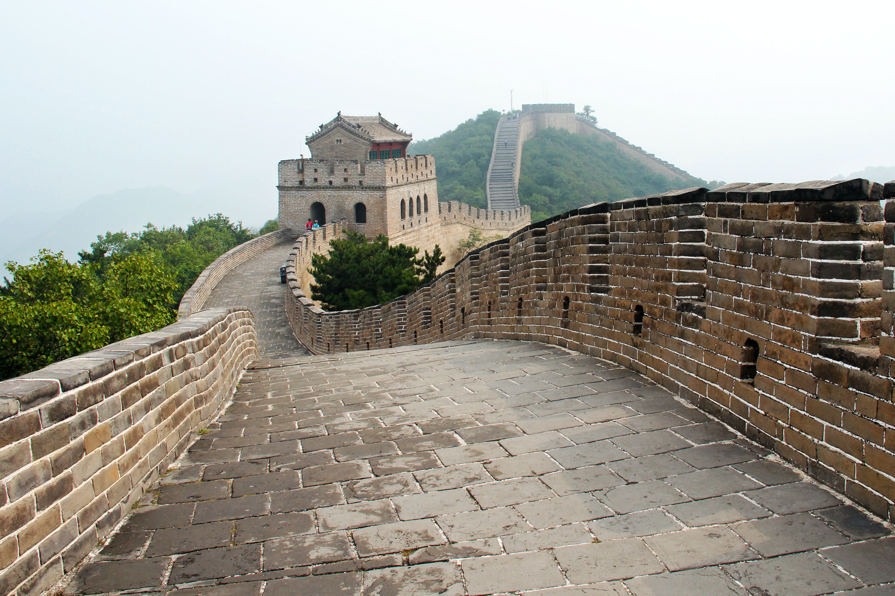
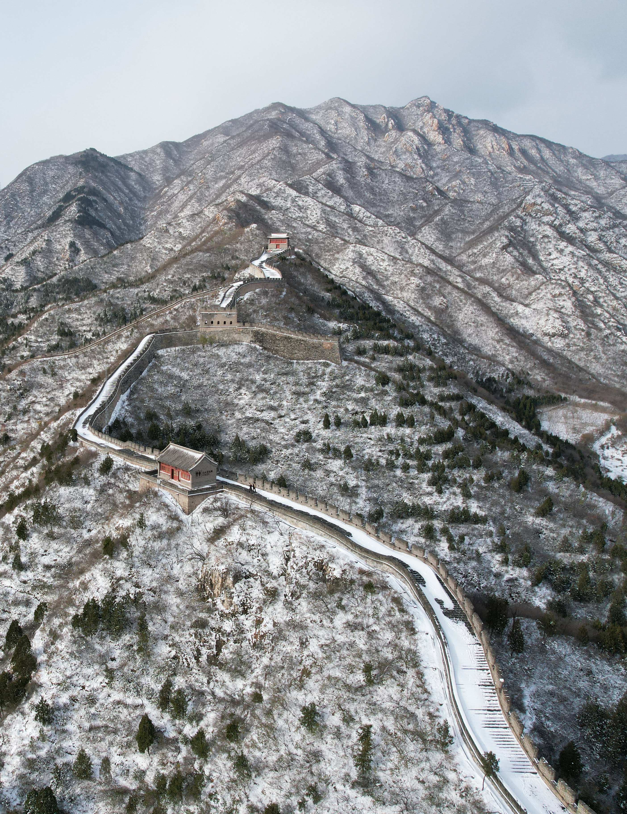

The Great Wall OF China
"Great Wall" redirects here. For other uses, see Great Wall (disambiguation).The Great Wall of China (traditional Chinese: 萬里長城; simplified Chinese: 万里长城; pinyin: Wànlǐ Chángchéng) is a series of fortifications that were built across the historical northern borders of ancient Chinese states and Imperial China as protection against various nomadic groups from the Eurasian Steppe. Several walls were built from as early as the 7th century BC,[4] with selective stretches later joined together by Qin Shi Huang (220–206 BC), the first emperor of China. Little of the Qin wall remains.[5] Later on, many successive dynasties built and maintained multiple stretches of border walls. The best-known sections of the wall were built by the Ming dynasty (1368–1644).
Apart from defense, other purposes of the Great Wall have included border controls, allowing the imposition of duties on goods transported along the Silk Road, regulation or encouragement of trade and the control of immigration and emigration.[6] Furthermore, the defensive characteristics of the Great Wall were enhanced by the construction of watchtowers, troop barracks, garrison stations, signaling capabilities through the means of smoke or fire, and the fact that the path of the Great Wall also served as a transportation corridor.
The frontier walls built by different dynasties have multiple courses. Collectively, they stretch from Liaodong in the east to Lop Lake in the west, from the present-day Sino–Russian border in the north to Tao River (Taohe) in the south; along an arc that roughly delineates the edge of the Mongolian steppe; spanning 21,196.18 km (13,170.70 mi) in total.[7][3] Today, the defensive system of the Great Wall is generally recognized as one of the most impressive architectural feats in history.[8]
Names:

In Chinese histories, the term "Long Wall(s)" (t 長城, s 长城, Chángchéng) appears in Sima Qian's Records of the Grand Historian, where it referred both to the separate great walls built between and north of the Warring States and to the more unified construction of the First Emperor.[9] The Chinese character 城, meaning city or fortress, is a phono-semantic compound of the "earth" radical 土 and phonetic 成, whose Old Chinese pronunciation has been reconstructed as *deŋ.[10] It originally referred to the rampart which surrounded traditional Chinese cities and was used by extension for these walls around their respective states; today, however, it is much more often the Chinese word for "city".[11]
The longer Chinese name "Ten-Thousand Mile Long Wall" (t 萬里長城, s 万里长城, Wànlǐ Chángchéng) came from Sima Qian's description of it in the Records, though he did not name the walls as such. The AD 493 Book of Song quotes the frontier general Tan Daoji referring to "the long wall of 10,000 miles", closer to the modern name, but the name rarely features in pre-modern times otherwise.[12] The traditional Chinese mile (里, lǐ) was an often irregular distance that was intended to show the length of a standard village and varied with terrain but was usually standardized at distances around a third of an English mile (540 m).[13] However, this use of "ten-thousand" (wàn) is figurative in a similar manner to the Greek and English myriad and simply means "innumerable" or "immeasurable".[14]
Because of the wall's association with the First Emperor's supposed tyranny, the Chinese dynasties after Qin usually avoided referring to their own additions to the wall by the name "Long Wall".[15] Instead, various terms were used in medieval records, including "frontier(s)" (塞, Sài),[16] "rampart(s)" (垣, Yuán),[16] "barrier(s)" (障, Zhàng),[16] "the outer fortresses" (外堡, Wàibǎo),[17] and "the border wall(s)" (t 邊牆, s 边墙, Biānqiáng).[15] Poetic and informal names for the wall included "the Purple Frontier" (紫塞, Zǐsài)[18] and "the Earth Dragon" (t 土龍, s 土龙, Tǔlóng).[19] Only during the Qing period did "Long Wall" become the catch-all term to refer to the many border walls regardless of their location or dynastic origin, equivalent to the English "Great Wall".[20]

Sections of the wall in south Gobi Desert and Mongolian steppe are sometimes referred to as "Wall of Genghis Khan", even though Genghis Khan did not construct any walls or permanent defense lines himself.[21]
History:
Early walls
Further information: Great Wall of Qiv
The Great Wall of the Qin stretches from Lintao t1 Liaodong
The Chinese were already familiar with the techniques of wall-building by the time of the Spring and Autumn period between the 8th and 5th centuries BC.[22] During this time and the subsequent Warring States period, the states of Qin, Wei, Zhao, Qi, Han, Yan, and Zhongshan[23][24] all constructed extensive fortifications to defend their own borders. Built to withstand the attack of small arms such as swords and spears, these walls were made mostly of stone or by stamping earth and gravel between board frames.
 The Great Wall of the Han is the longest of all walls, from Mamitu near Yumenguan to Liaodong
The Great Wall of the Han is the longest of all walls, from Mamitu near Yumenguan to Liaodong King Zheng of Qin conquered the last of his opponents and unified China as the First Emperor of the Qin dynasty ("Qin Shi Huang") in 221 BC. Intending to impose centralized rule and prevent the resurgence of feudal lords, he ordered the destruction of the sections of the walls that divided his empire among the former states. To position the empire against the Xiongnu people from the north, however, he ordered the building of new walls to connect the remaining fortifications along the empire's northern frontier. "Build and move on" was a central guiding principle in constructing the wall, implying that the Chinese were not erecting a permanently fixed border.[25] Transporting the large quantity of materials required for construction was difficult, so builders always tried to use local resources. Stones from the mountains were used over mountain ranges, while rammed earth was used for construction in the plains. There are no surviving historical records indicating the exact length and course of the Qin walls. Most of the ancient walls have eroded away over the centuries, and very few sections remain today. The human cost of the construction is unknown, but it has been estimated by some authors that hundreds of thousands[26] workers died building the Qin wall. Later, the Han,[27] the Northern dynasties and the Sui all repaired, rebuilt, or expanded sections of the Great Wall at great cost to defend themselves against northern invaders.[28] The Tang and Song dynasties did not undertake any significant effort in the region.[28] Dynasties founded by non-Han ethnic groups also built their border walls: the Xianbei-ruled Northern Wei, the Khitan-ruled Liao, Jurchen-led Jin and the Tangut-established Western Xia, who ruled vast territories over Northern China throughout centuries, all constructed defensive walls but those were located much to the north of the other Great Walls as we know it, within China's autonomous region of Inner Mongolia and in modern-day Mongolia itself.[29]
Course:
A formal definition of what constitutes a "Great Wall" has not been agreed upon, making the full course of the Great Wall difficult to describe in its entirety.[51] The defensive lines contain multiple stretches of ramparts, trenches and ditches, as well as individual fortresses.
.jpg) In 2012, based on existing research and the results of a comprehensive mapping survey, the National Cultural Heritage Administration of China concluded that the remaining Great Wall associated sites include 10,051 wall sections, 1,764 ramparts or trenches, 29,510 individual buildings, and 2,211 fortifications or passes, with the walls and trenches spanning a total length of 21,196.18 km (13,170.70 mi).[3] Incorporating advanced technologies, the study has concluded that the Ming Great Wall measures 8,850 km (5,500 mi).[52] This consists of 6,259 km (3,889 mi) of wall sections, 359 km (223 mi) of trenches and 2,232 km (1,387 mi) of natural defensive barriers such as hills and rivers.[52] In addition, Qin, Han and earlier Great Wall sites are 3,080 km (1,914 mi) long in total; Jin dynasty (1115–1234) border fortifications are 4,010 km (2,492 mi) in length; the remainder date back to Northern Wei, Northern Qi, Sui, Tang, the Five Dynasties, Song, Liao and Xixia.[3] About half of the sites are located in Inner Mongolia (31%) and Hebei (19%).[3]
In 2012, based on existing research and the results of a comprehensive mapping survey, the National Cultural Heritage Administration of China concluded that the remaining Great Wall associated sites include 10,051 wall sections, 1,764 ramparts or trenches, 29,510 individual buildings, and 2,211 fortifications or passes, with the walls and trenches spanning a total length of 21,196.18 km (13,170.70 mi).[3] Incorporating advanced technologies, the study has concluded that the Ming Great Wall measures 8,850 km (5,500 mi).[52] This consists of 6,259 km (3,889 mi) of wall sections, 359 km (223 mi) of trenches and 2,232 km (1,387 mi) of natural defensive barriers such as hills and rivers.[52] In addition, Qin, Han and earlier Great Wall sites are 3,080 km (1,914 mi) long in total; Jin dynasty (1115–1234) border fortifications are 4,010 km (2,492 mi) in length; the remainder date back to Northern Wei, Northern Qi, Sui, Tang, the Five Dynasties, Song, Liao and Xixia.[3] About half of the sites are located in Inner Mongolia (31%) and Hebei (19%).[3] Characteristics:
Before the use of bricks, the Great Wall was mainly built from rammed earth, stones, and wood. During the Ming, however, bricks were heavily used in many areas of the wall, as were materials such as tiles, lime, and stone. The size and weight of the bricks made them easier to work with than earth and stone, so construction quickened. Additionally, bricks could bear more weight and endure better than rammed earth. Stone can hold under its own weight better than brick, but is more difficult to use. Consequently, stones cut into rectangular shapes were used for the foundation, inner and outer brims, and gateways of the wall. Battlements line the uppermost portion of the vast majority of the wall, with defensive gaps a little over 30 cm (12 in) tall, and about 23 cm (9.1 in) wide. From the parapets, guards could survey the surrounding land.[59] Communication between the army units along the length of the Great Wall, including the ability to call reinforcements and warn garrisons of enemy movements, was of high importance. Signal towers were built upon hill tops or other high points along the wall for their visibility. Wooden gates could be used as a trap against those going through. Barracks, stables, and armories were built near the wall's inner surface.[59]


Condition
Visibility from space
From the MoonThe notion that the wall can be seen from the moon (with an average orbital radius of 385,000 km (239,000 miles)) is a well-known but untrue myth.[65]
One of the earliest known references to the myth that the Great Wall can be seen from the moon appears in a letter written in 1754 by the English antiquary William Stukeley. Stukeley wrote that, "This mighty wall [Hadrian's wall] of four score miles [130 km] in length is only exceeded by the Chinese Wall, which makes a considerable figure upon the terrestrial globe, and may be discerned at the Moon."[66] The claim was also mentioned by Henry Norman in 1895 where he states "besides its age it enjoys the reputation of being the only work of human hands on the globe visible from the Moon."[67] The issue of "canals" on Mars was prominent in the late 19th century and may have led to the belief that long, thin objects were visible from space. The claim that the Great Wall is visible from the moon also appears in 1932's Ripley's Believe It or Not! strip.[68]
The claim that the Great Wall is visible from the moon has been debunked many times[69] (the apparent width of the Great Wall from the Moon would be the same as that of a human hair viewed from 3 km (2 mi) away[70]) but is still ingrained in popular culture.[71]